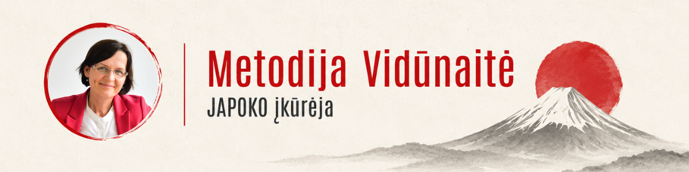

| SUKURTA JAPONIJOJE ● ATRINKTA JUMS | ||||||||||||||||||
|
Seniai nesimatėme
GAL JAU LAIKAS
| ||||||||||||||||||
| ||||||||||||||||||
KUR SUGRĮŽTI? ŠEŠIOS JAPOKO ATRADIMŲ KRYPTYSVaikams, kasdienybei, namams, sau ir apgalvotoms dovanoms. | ||||||||||||||||||
| ||||||||||||||||||
 | ||||||||||||||||||
„Jeigu nežinote, nuo ko pradėti, parašykite. Padėsiu išrinkti pagal žmogų, progą ar tai, ką jau spėjote pamėgti.“ METODIJA · JAPOKO ĮKŪRĖJA | ||||||||||||||||||
VISKAS VIENOJE VIETOJE GRĮŽKITE TEN, KUR SMALSU | ||||||||||||||||||
| ||||||||||||||||||
| MB „Creator Japonicus“ · Bajorų g. 9, Migūnai, Vilniaus raj., LT-13243, Lietuva japoko.com · info@japoko.com Šį laišką gavote, nes anksčiau pirkote JAPOKO parduotuvėje. Atsisakyti naujienlaiškio |